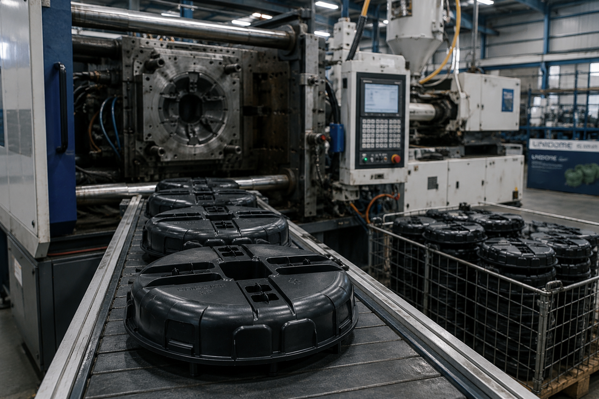
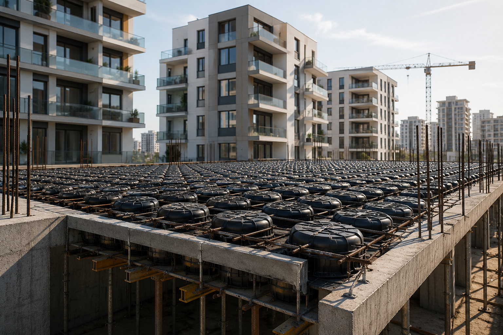
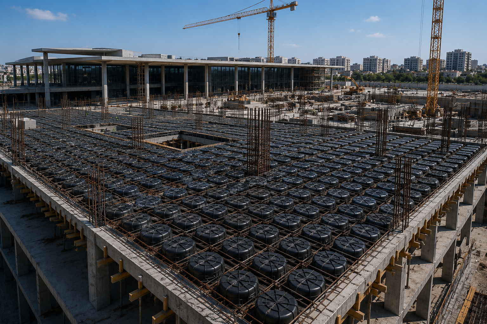
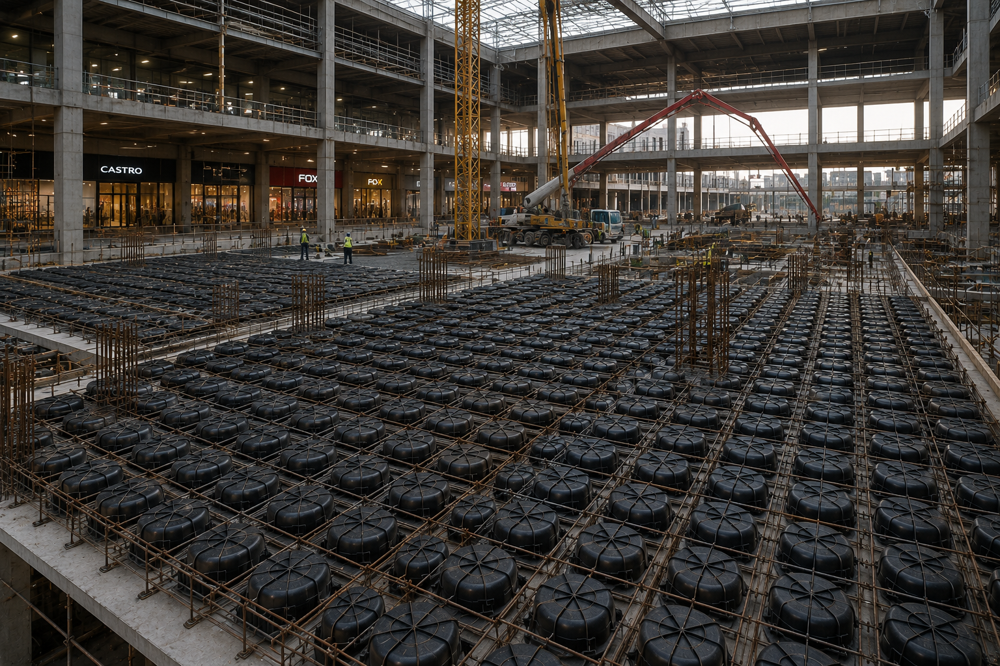
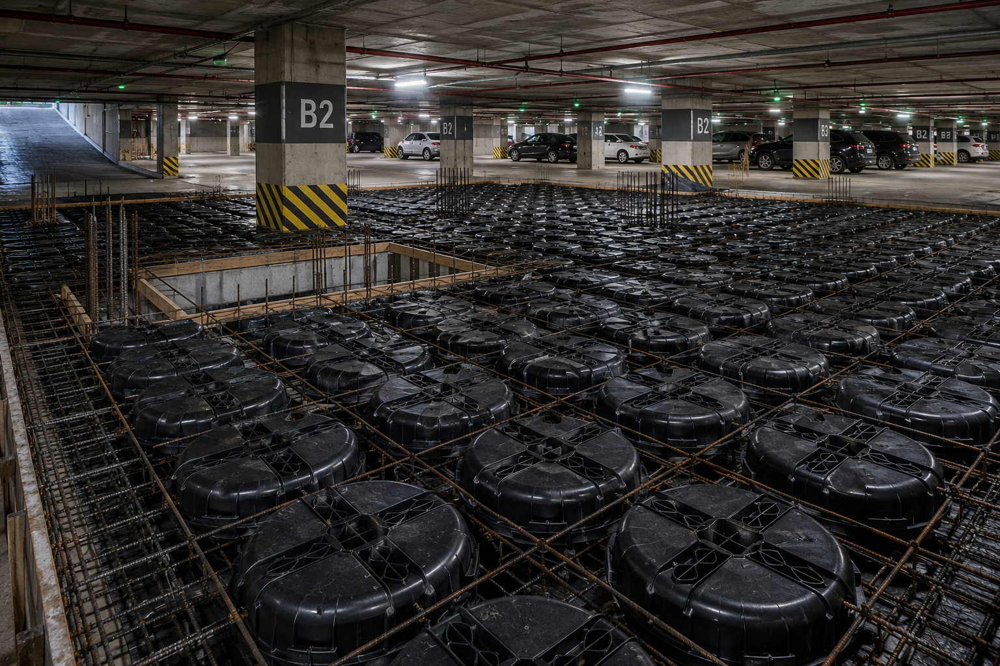
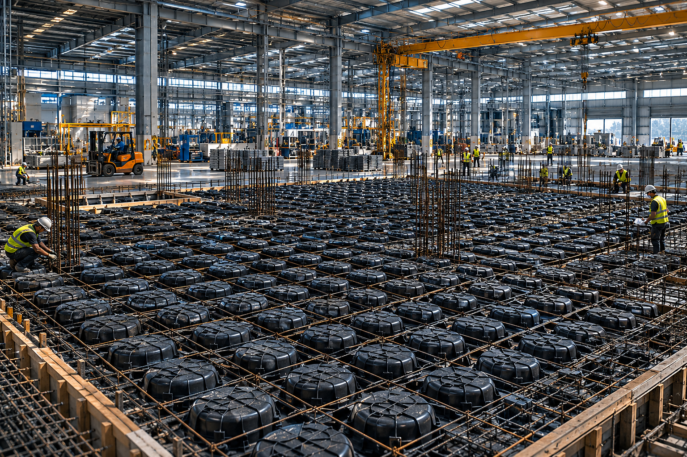
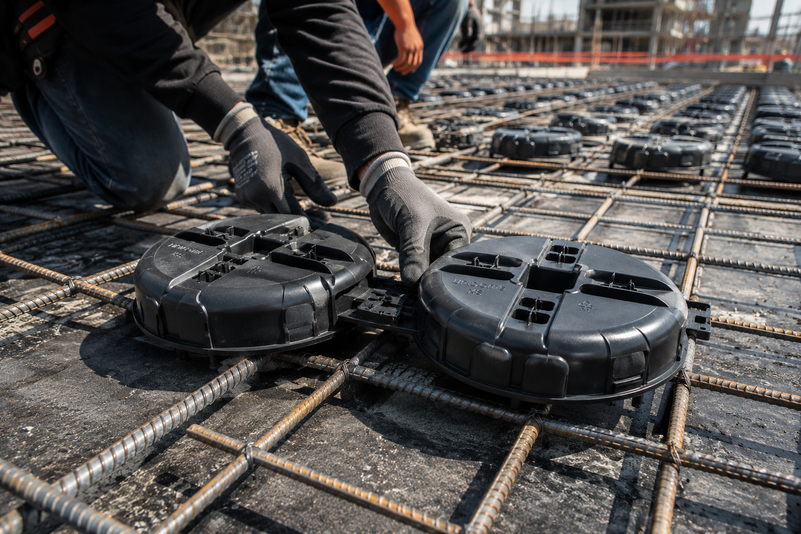

הפחתת משקל עצמי
צמצום כמות הבטון הלא נחוצה באזורי התקרה שאינם תורמים משמעותית לחוזק המבני.
מערכת UNIDOME מבוססת על גופי חלל מפלסטיק המוטמעים בתוך תקרות בטון, ומאפשרת להפחית נפח בטון, לצמצם משקל עצמי, לייעל את התכנון ההנדסי ולשמור על ביצועים מבניים גבוהים.
מתאים לפרויקטים בבנייה רוויה, מבני ציבור, מסחר, חניונים ותקרות בטון רחבות.
צמצום כמות הבטון הלא נחוצה באזורי התקרה שאינם תורמים משמעותית לחוזק המבני.
שימוש יעיל יותר בבטון ובברזל, תוך הפחתת עודפים ועלויות ייצור וביצוע.
התאמה למגוון עוביי תקרה, דרישות עומס, תכנון אדריכלי ותנאי פרויקט.
הפחתת עומסים, שיפור תהליך הביצוע וצמצום השפעה סביבתית בפרויקטים מתקדמים.

UNIDOME הוא פתרון לבנייה מתקדמת המבוסס על גופי פלסטיק חלולים המשולבים בתוך תקרות בטון. הגופים יוצרים חללים מבוקרים באזורים שבהם אין צורך במסת בטון מלאה, וכך מאפשרים לשמור על תפקוד מבני נכון תוך הפחתת משקל וחומר.
המערכת מיועדת לסייע למהנדסים, קבלנים ויזמים להגיע לאיזון נכון בין חוזק, משקל, עלות וביצוע, במיוחד בפרויקטים שבהם נדרשות תקרות רחבות, עומסים מחושבים ויעילות חומרית גבוהה.
פתרון שמאפשר הפחתת משקל עצמי בלי לוותר על עקרונות התכנון והביצועים הנדרשים.
מתאים למבני מגורים, מבני ציבור, מרכזים מסחריים, חניונים ופרויקטים תעשייתיים.
הפחתת נפח בטון יכולה לסייע בצמצום חומר, עומסים ועלויות נלוות בפרויקט.
פחות בטון, פחות חומר מיותר ותהליך בנייה יעיל יותר עם השפעה סביבתית מופחתת.
פתרון אוניברסלי למגוון עוביי תקרה, מתאים לפרויקטים הדורשים גמישות תכנונית והרכבה יעילה.
פתרון מתקדם לתקרות עבות יותר ולעומסים גבוהים, עם התאמה לפרויקטים מורכבים ורחבי היקף.
מערכת המבוססת על שילוב גופים ליצירת פתרון יעיל בפרויקטים שבהם נדרשת התאמה מבנית מדויקת.
פתרון לתקרות בטון עם דרישות ביצוע גבוהות, המתאים לשילוב במערכי תכנון מתקדמים.
פתרון נוסף למקרי שימוש ייעודיים, בהתאם לדרישות התכנון, הגובה, העומסים ותנאי הפרויקט.
הנתונים הבאים הם מפרט בסיס. ההתאמה הסופית לפרויקט נקבעת לפי תכנון מהנדס, עוביי התקרה, העומסים ותנאי האתר.
| שם מערכת | UNIDOME |
|---|---|
| קטגוריה | פתרון גופי חלל לתקרות בטון |
| חומר | פלסטיק הנדסי מותאם לבנייה |
| שימוש עיקרי | הפחתת נפח בטון ומשקל עצמי בתקרות |
| מתאים ל | בנייה רוויה, ציבורית, מסחרית ותעשייתית |
| שילוב בפרויקט | לפי תכנון מהנדס וקונסטרוקטור |
| יתרונות מרכזיים | חיסכון חומרי, הפחתת עומסים, גמישות תכנונית ויעילות ביצוע |
| התאמה | לפי עובי תקרה, עומסים, שטח ותנאי הפרויקט |

תקרות רחבות יותר, הפחתת עומסים ושימוש יעיל יותר בחומרי הבנייה.

פתרון מתאים לפרויקטים גדולים הדורשים תכנון יציב, יעיל וחסכוני.

תמיכה בתקרות עם מפתחים רחבים ודרישות תפעול גבוהות.

אפשרות להפחתת משקל עצמי ושיפור יעילות מבנית באזורים עתירי בטון.

מתאים למבנים שבהם נדרשת יציבות, תכנון עומסים ופתרון ביצועי מדויק.
הטמעת UNIDOME בפרויקט דורשת הבנה של הצורך ההנדסי, תנאי האתר, עוביי התקרה, העומסים והכמויות. RYS Plast מספקת מענה מקצועי, התאמה לפרויקט, ייצור או אספקה לפי דרישה וליווי בתהליך הבחירה.
לפנייה לצוות הטכניכל מה שכדאי לדעת על UNIDOME לפני שמתחילים תהליך התאמה לפרויקט.
היתרון המרכזי הוא יצירת חללים מבוקרים בתוך תקרות בטון, שמאפשרים להפחית חומר ומשקל עצמי תוך שמירה על תכנון מבני נכון לפי דרישות הפרויקט.
לא באופן אוטומטי. ההתאמה תלויה בעובי התקרה, עומסים, שיטת הביצוע, דרישות הקונסטרוקציה ותכנון המהנדס.
כן, המערכת יכולה להתאים לפרויקטים של מגורים, מבני ציבור, מסחר וחניונים, בכפוף לבדיקה ותכנון מקצועי.
לא. UNIDOME הוא פתרון מוצר/מערכת לתקרות בטון, אך השימוש בו חייב להשתלב בתכנון הנדסי מקצועי.
כן. ניתן לבדוק התאמה לפי סוג הפרויקט, עובי התקרה, הכמויות, דרישות הביצוע והצרכים ההנדסיים.
שלחו לנו פרטים ונחזור אליכם עם מענה מקצועי לגבי התאמת UNIDOME לפרויקט שלכם, כולל ייעוץ ראשוני והצעת מחיר בהתאם לצורך.
